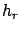
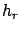

Siguiente: Cálculo de ganancia de
Subir: Algoritmos y cálculos implementados
Anterior: Algoritmos y cálculos implementados
Índice General
Todos los modelos tienen dependencia con la distancia. La misma se
calcula como (ver figura 10.1):
Figura 10.1:
Distancia entre la radiobase y el móvil
|
|
donde
y
,
 son las coordenadas de la antena
trasmisora y las del móvil respectivamente. Las alturas y
 se calculan como la suma de la altura del terreno más las
altura de la radiobase y del móvil. En el caso de la altura del
trasmisor, si está sobre un edificio la altura de éste también es
tomada en cuenta.
son las coordenadas de la antena
trasmisora y las del móvil respectivamente. Las alturas y
 se calculan como la suma de la altura del terreno más las
altura de la radiobase y del móvil. En el caso de la altura del
trasmisor, si está sobre un edificio la altura de éste también es
tomada en cuenta.
SAPO